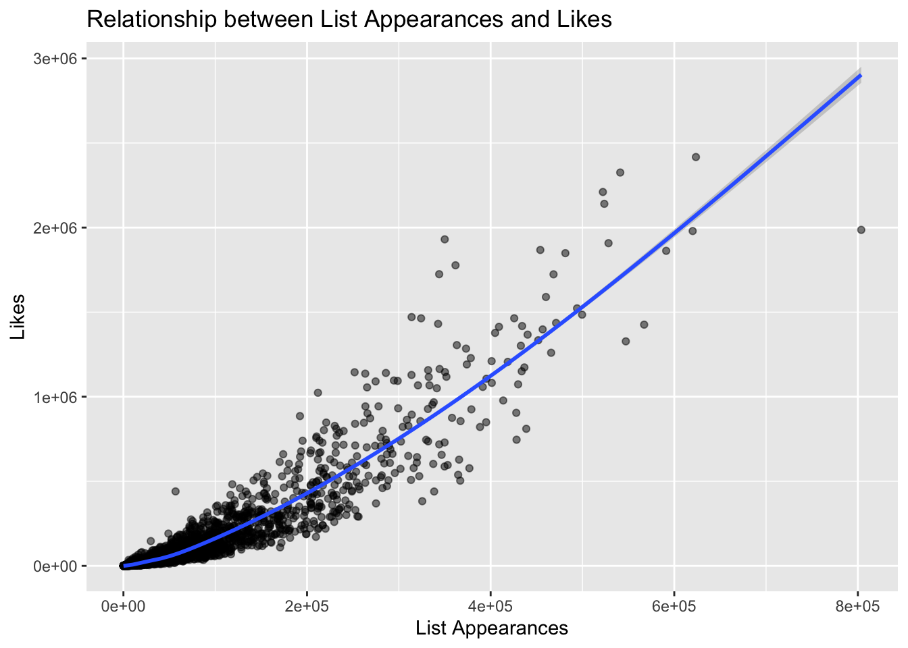
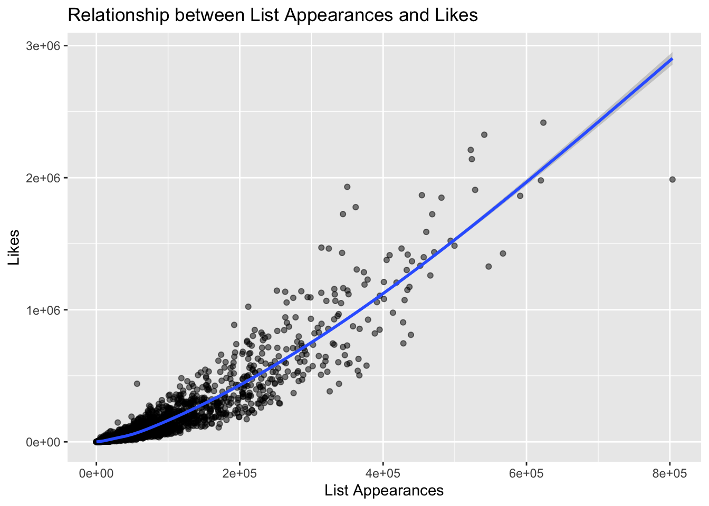

Data Cleaning
2025-11-24
library(tidyverse)## ── Attaching core tidyverse packages ──────────────────────── tidyverse 2.0.0 ──
## ✔ dplyr 1.1.4 ✔ readr 2.1.5
## ✔ forcats 1.0.0 ✔ stringr 1.5.1
## ✔ ggplot2 3.5.2 ✔ tibble 3.3.0
## ✔ lubridate 1.9.4 ✔ tidyr 1.3.1
## ✔ purrr 1.1.0
## ── Conflicts ────────────────────────────────────────── tidyverse_conflicts() ──
## ✖ dplyr::filter() masks stats::filter()
## ✖ dplyr::lag() masks stats::lag()
## ℹ Use the conflicted package (<http://conflicted.r-lib.org/>) to force all conflicts to become errorsImporting the Data, filter only English-language films
movie_df = read.csv("data/letterbox_movie_classification_dataset.csv") |>
janitor::clean_names() |>
filter(original_language == "English") |>
select(film_title, director, average_rating, genres, runtime, original_language, description, studios, watches, list_appearances, likes, fans, lowest, medium, highest, total_ratings)EDA - genre count
genre_df = movie_df |>
mutate(genres = str_remove_all(genres, "\\[|\\]|'")) |>
separate_rows(genres, sep = ",\\s*")
genre_count =
genre_df |>
group_by(genres) |>
summarise(film_count = n()) |>
arrange (desc(film_count))
print (genre_count)## # A tibble: 30 × 2
## genres film_count
## <chr> <int>
## 1 Drama 3346
## 2 Comedy 2620
## 3 Thriller 1940
## 4 Action 1683
## 5 Horror 1458
## 6 Crime 1255
## 7 Adventure 1230
## 8 Romance 1146
## 9 Science Fiction 1070
## 10 Fantasy 769
## # ℹ 20 more rowsEDA - genre df pivot wider
genre_wide = genre_df |>
mutate(
studios = as.character(studios),
description = as.character(description),
genres = as.character(genres)
) |>
mutate(value = 1) |>
group_by(
film_title, director, average_rating, runtime, original_language,
description, studios, watches, list_appearances, likes, fans,
lowest, medium, highest, total_ratings, genres
) |>
summarise(value = max(value), .groups = "drop") |>
pivot_wider(
id_cols = c(
film_title, director, average_rating, runtime, original_language,
description, studios, watches, list_appearances, likes, fans,
lowest, medium, highest, total_ratings
),
names_from = genres,
values_from = value,
values_fill = 0
) |>
janitor::clean_names()EDA - top 5 films based on watches (mainstream popularity)
top_films =
movie_df |>
arrange(desc(watches)) |>
select(film_title, director, watches) |>
slice_head(n = 5)
print(top_films)## film_title director watches
## 1 Barbie Greta Gerwig 5195503
## 2 Fight Club David Fincher 5059722
## 3 Interstellar Christopher Nolan 5044987
## 4 Joker Todd Phillips 4952400
## 5 The Dark Knight Christopher Nolan 4488171EDA - top 5 films based on average rating (critical acclaim)
top_rated =
movie_df |>
arrange(desc(average_rating)) |>
select(film_title, director, average_rating) |>
slice_head(n = 5)
print(top_rated)## film_title director
## 1 Radiohead: In Rainbows - From the Basement David Barnard
## 2 Stop Making Sense Jonathan Demme
## 3 12 Angry Men Sidney Lumet
## 4 Twin Peaks David Lynch
## 5 Planet Earth II Elizabeth White, Justin Anderson
## average_rating
## 1 4.71
## 2 4.68
## 3 4.63
## 4 4.63
## 5 4.63EDA - distribution of movie runtimes (please edit the aesthetics of it)
ggplot(movie_df, aes(x = runtime)) +
geom_histogram () +
labs (title = "Distribution of Movie Runtimes",
x = "Runtime (minutes)", y = "Count")## `stat_bin()` using `bins = 30`. Pick better value with `binwidth`.
Is this an EDA? - relationship between list appearances and likes (please edit the aesthetics of it)
ggplot(movie_df, aes(x=list_appearances, y = likes)) +
geom_point (alpha = 0.5) +
geom_smooth () +
labs (title = "Relationship between List Appearances and Likes",
x = "List Appearances", y = "Likes")## `geom_smooth()` using method = 'gam' and formula = 'y ~ s(x, bs = "cs")'
Is this an EDA? - relationship between runtime and average rating (please edit the aesthetics of it)
ggplot(movie_df, aes(x=runtime, y=average_rating)) +
geom_point(alpha=0.5) +
geom_smooth() +
labs (title = "Relationship between Runtime and Average Rating",
x = "Runtime (minutes)", y = "Average Rating")## `geom_smooth()` using method = 'gam' and formula = 'y ~ s(x, bs = "cs")'
Cont. EDA of relationship between runtime and average rating
runtime_rate_df =
movie_df |>
mutate(runtime_category = case_when(
runtime <= 90 ~ "Short",
runtime > 90 & runtime <= 120 ~ "Medium",
runtime > 120 ~ "Long"
))
runtime_rate_df |>
group_by (runtime_category) |>
summarise (avg_rating = mean(average_rating, na.rm = TRUE)) |>
arrange (desc(avg_rating))## # A tibble: 3 × 2
## runtime_category avg_rating
## <chr> <dbl>
## 1 Long 3.48
## 2 Medium 3.18
## 3 Short 3.12The next two chunks of code is the same, only nature of run time variable is different
Linear Regression Model to further analyze the relationship between run time and average rating (run time as continuous variable)
runtime_rate_model_cont = lm(average_rating ~ runtime, data = movie_df)Linear Regression Model to further analyze the relationship (run time as categorical variable )
runtime_rate_model_cat = lm(average_rating ~runtime_category, data = runtime_rate_df)The next two chunks of code is the same, only nature of run time variable is different
Linear Regression Model to analyze the relationship between watches and run time (run time as cont. variable)
runtime_watch_model_cont = lm(watches ~ runtime, data = movie_df)Linear Regression Model to analyze the relationship between watches and run time (run time as categorical variable)
runtime_watch_model_cat = lm(watches ~ runtime_category, data = runtime_rate_df)